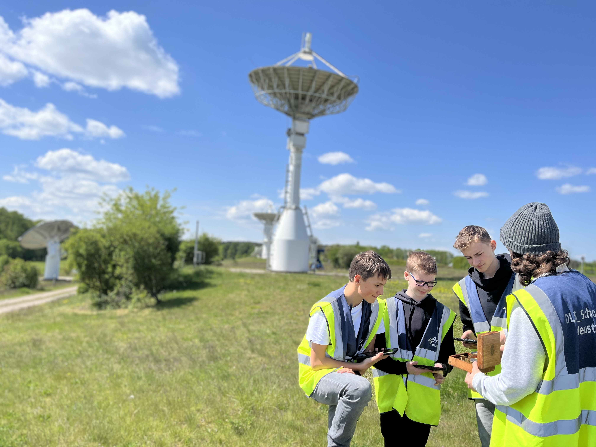

Countdown bis zum Raketenstart
Wird geladen...
🚀
Willkommen bei unserem CanSat-Projekt
Wir sind das CanSat Team 2025/26 – ein motiviertes Schülerteam, das im Rahmen des Deutschen CanSat-Wettbewerbs 2025/26 einen Minisatelliten in Form einer Dose baut und starten lässt.
Worum geht es?
Ein CanSat ist ein Miniatursatellit in der Größe einer Getränkedose. Unsere Aufgabe: Messdaten sammeln, mit Funk übertragen und eigene Experimente durchführen – mit echter Raumfahrttechnik im Kleinformat.